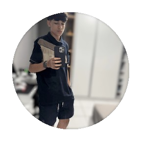

Sobre Mim
Meu nome é Gabriel Martins e atualmente estudo na EEEP Jeová Costa Lima, onde faço o curso de Informática. Decidi escolher esse curso porque é uma área que gosto muito e, desde pequeno, sonhava em trabalhar com informática. Tenho esse interesse desde novo, principalmente por ter uma família que também trabalha com tecnologia. Tenho um primo e um tio que fazem Engenharia de Software e outro tio que trabalha com manutenção de computadores, o que também ajudou a aumentar meu interesse pela área.
Eu gosto bastante de programação e também de fazer projetos envolvendo motores de carrinhos. Já tive algumas experiências com manutenção de coisas e gosto de aprender na prática, tentando entender como as coisas funcionam e como posso melhorá-las. Atualmente, faço práticas de PHP e HTML/CSS e as áreas que mais despertam meu interesse são programação e manutenção.
Atualmente, estou aprendendo a desenvolver sites básicos utilizando HTML e CSS. Tenho como objetivo dominar o Front-end, uma área que já estudava antes mesmo de entrar no curso de Informática. No futuro, pretendo trabalhar como programador em grandes empresas, como o Google, ou trabalhar na área de tecnologia de bancos, principalmente envolvendo programação e banco de dados.
